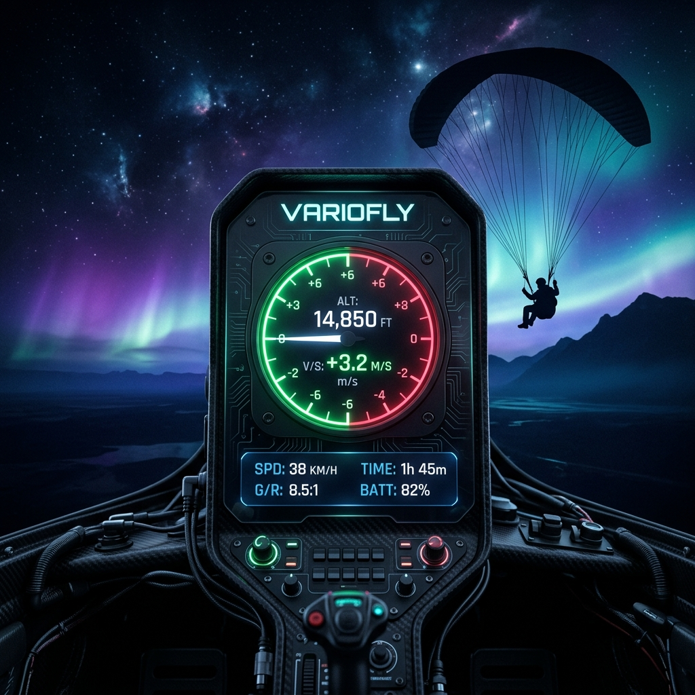

Parapente · Barómetro Nativo · Android
VarioFly accede directamente al sensor barométrico de hardware de tu Android. Sin browser, sin restricciones. Precisión real para vuelo real.
Guía de instalación
Nada de cuentas, nada de Play Store. Solo descargá, instalá y volá.
variofly.apk se guardará en tu carpeta de Descargas.Ajustes → Seguridad y activá Fuentes desconocidas o Instalar apps desconocidas.variofly.apk → Instalar.Datos técnicos
Características
Todo lo que necesitás en el aire, nada que no necesitás.
Descargá VarioFly en tu Android ahora mismo. Sin Play Store, sin cuenta, sin tracking. Solo precisión.
⬇ Descargar VarioFly APK
7.9 MB · Android 7+ · Libre & Open Source
Repo: github.com/xunorus/variofly
¿Preguntas? Abrí la app y usá el variometro 🪂